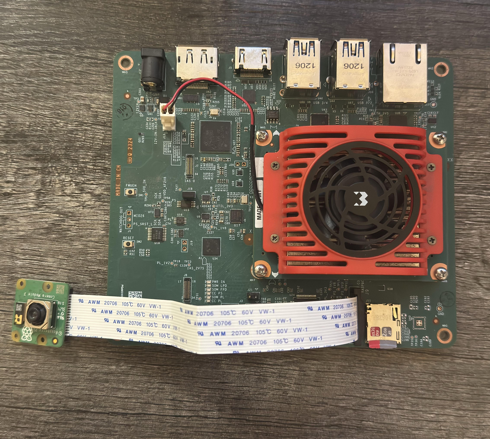

Introduction¶
This document shows how to set up the board and exercise the Raspberry Pi Camera V3.
This guide and its prebuilts are targeted for Ubuntu 24.04 and AMD 2024.1 toolchain.
Hardware Requirements¶
KV260 Vision AI Starter Kit
KV260 Power Supply & Adapter
MicroSD Card
1080P/4K Monitor and Power Supply
DisplayPort/HDMI Cable
Set up the Board¶
The test requires the following hardware setup to run Raspberry Pi Camera V3 test successfully on target KV260.
Monitor

Before booting, connect a 1080P/4K monitor to the board via either Display Port and/or HDMI port.
RaspberryPi Camera V3 Module

Connect the Raspberry Pi Camera Module to J9 on the KV260
Tested Artifacts¶
Testing was performed with the following artifacts:
Boot Linux¶
Before continuing with the the test specific instructions, if not yet done so, boot Linux with instructions from:
Download and Load the BIST PL Firmware¶
Install firmware binaries.
sudo apt install xlnx-firmware-kv260-bist-imx708
List the installed application firmware binaries.
The firmware consists of bitstream, device tree overlay (dtbo) file. The firmware is loaded dynamically on user request once Linux is fully booted. The xmutil utility can be used for that purpose.
After installing the FW, execute xmutil listapps to verify that it is captured under the listapps function, and to have dfx-mgrd, re-scan and register all accelerators in the firmware directory tree.
sudo xmutil listapps
Load a new application firmware binary.
When there is already another accelerator/firmware being activated, unload it first, then load the desired BIST firmware.
sudo xmutil unloadapp sudo xmutil loadapp kv260-bist-imx708
Miscellaneous Preparation¶
On target KV260 disable desktop environment before running the docker for the display testing to function as intended.
Check if default target is set to
graphical.targetsudo systemctl get-default
If above command returns
graphical.target, set default target to multi-user. This step is to ensure that by default we always start without Ubuntu display manager.sudo systemctl set-default multi-user.target
Reboot the system for the change to take effect.
sudo reboot
Download and Run the Docker Image¶
Pull the docker image from dockerhub.
docker pull xilinx/kria-bist:1.2-noble-24.04
The storage volume on the SD card can be limited with multiple docker images installed. If there are space issues, use the following command to remove existing docker images.
docker rmi --force <image>
You can find the images installed with the following command:
docker imagesLaunch the docker container using the following command:
docker run \ --env=DISPLAY \ --env=XDG_SESSION_TYPE \ --net=host \ --privileged \ --volume=/home/ubuntu/.Xauthority:/root/.Xauthority:rw \ -v /tmp:/tmp \ -v /dev:/dev \ -v /sys:/sys \ -v /etc/vart.conf:/etc/vart.conf \ -v /lib/firmware/xilinx:/lib/firmware/xilinx \ -v /run:/run \ -it xilinx/kria-bist:1.2-noble-24.04 bash
It launches the image in a new container and drops the user into a bash shell.
root@xlnx-docker/#
Run the BIST Test¶
Run a set of media-ctl commands to set the media path on IMX708
These commands set the IMX708 sensor resolution to 1536×864 RAW10 and configure the pipeline blocks so the image is demosaiced, converted to RGB, then upscaled in the PL to 1920×1080 and output as a YUV (NV12-type) format.
root@kria:/# media-ctl -d /dev/media0 -V "\"80050000.csiss\":0 [SRGGB10_1X10/1536x864 field:none colorspace:raw xfer:none ycbcr:601 quantization:full-range]" root@kria:/# media-ctl -d /dev/media0 -V "\"80050000.csiss\":1 [SRGGB10_1X10/1536x864 field:none colorspace:raw xfer:none ycbcr:601 quantization:full-range]" root@kria:/# media-ctl -d /dev/media0 -V "\"b0030000.v_demosaic\":0 [SRGGB10_1X10/1536x864 field:none colorspace:raw xfer:none ycbcr:601 quantization:full-range]" root@kria:/# media-ctl -d /dev/media0 -V "\"b0030000.v_demosaic\":1 [RBG888_1X24/1536x864 field:none colorspace:srgb]" root@kria:/# media-ctl -d /dev/media0 -V "\"b0080000.scaler\":0 [RBG888_1X24/1536x864 field:none colorspace:srgb]" root@kria:/# media-ctl -d /dev/media0 -V "\"b0080000.scaler\":1 [VYYUYY8_1X24/1920x1080 field:none colorspace:srgb]" root@kria:/# media-ctl -d /dev/media0 -V "\"imx708\":0 [fmt:SRGGB10_1X10/1536x864 field:none colorspace:raw xfer:none ycbcr:601 quantization:full-range ]"
Run a Live Video Stream on connected Display using gstreamer. You can expect a framerate of ~58-60 fps.
root@kria:/# gst-launch-1.0 v4l2src device=/dev/video1 io-mode=mmap ! "video/x-raw, width=1920, height=1080, framerate=60/1, format=NV12" ! perf ! kmssink fullscreen-overlay=true bus-id=fd4a0000.display -v Setting pipeline to PAUSED ... Pipeline is live and does not need PREROLL ... /GstPipeline:pipeline0/GstKMSSink:kmssink0: display-width = 3840 /GstPipeline:pipeline0/GstKMSSink:kmssink0: display-height = 2160 Pipeline is PREROLLED ... Setting pipeline to PLAYING ... New clock: GstSystemClock /GstPipeline:pipeline0/GstV4l2Src:v4l2src0.GstPad:src: caps = video/x-raw, width=(int)1920, height=(int)1080, framerate=(fraction)60/1, format=(string)NV12, interlace-mode=(string)progressive, colorimetry=(string)bt709 /GstPipeline:pipeline0/GstCapsFilter:capsfilter0.GstPad:src: caps = video/x-raw, width=(int)1920, height=(int)1080, framerate=(fraction)60/1, format=(string)NV12, interlace-mode=(string)progressive, colorimetry=(string)bt709 /GstPipeline:pipeline0/GstPerf:perf0.GstPad:src: caps = video/x-raw, width=(int)1920, height=(int)1080, framerate=(fraction)60/1, format=(string)NV12, interlace-mode=(string)progressive, colorimetry=(string)bt709 /GstPipeline:pipeline0/GstKMSSink:kmssink0.GstPad:sink: caps = video/x-raw, width=(int)1920, height=(int)1080, framerate=(fraction)60/1, format=(string)NV12, interlace-mode=(string)progressive, colorimetry=(string)bt709 /GstPipeline:pipeline0/GstPerf:perf0.GstPad:sink: caps = video/x-raw, width=(int)1920, height=(int)1080, framerate=(fraction)60/1, format=(string)NV12, interlace-mode=(string)progressive, colorimetry=(string)bt709 /GstPipeline:pipeline0/GstCapsFilter:capsfilter0.GstPad:sink: caps = video/x-raw, width=(int)1920, height=(int)1080, framerate=(fraction)60/1, format=(string)NV12, interlace-mode=(string)progressive, colorimetry=(string)bt709 INFO: perf: perf0; timestamp: 0:04:59.715199759; bps: 0.000; mean_bps: 0.000; fps: 0.000; mean_fps: 0.000 Redistribute latency... INFO:01.3 / 99:99:99. perf: perf0; timestamp: 0:05:00.734893375; bps: 821145600.000; mean_bps: 0.000; fps: 57.861; mean_fps: 57.861 INFO:02.4 / 99:99:99. perf: perf0; timestamp: 0:05:01.734973421; bps: 1517875200.000; mean_bps: 1517875200.000; fps: 60.995; mean_fps: 59.428 INFO:03.3 / 99:99:99. perf: perf0; timestamp: 0:05:02.735017514; bps: 1492992000.000; mean_bps: 1505433600.000; fps: 59.997; mean_fps: 59.618 INFO:04.3 / 99:99:99. perf: perf0; timestamp: 0:05:03.735048594; bps: 1492992000.000; mean_bps: 1501286400.000; fps: 59.998; mean_fps: 59.713 INFO:05.4 / 99:99:99. perf: perf0; timestamp: 0:05:04.768339124; bps: 1517875200.000; mean_bps: 1505433600.000; fps: 59.035; mean_fps: 59.577 INFO:06.4 / 99:99:99. perf: perf0; timestamp: 0:05:05.768360919; bps: 1492992000.000; mean_bps: 1502945280.000; fps: 59.999; mean_fps: 59.647 INFO:07.4 / 99:99:99. perf: perf0; timestamp: 0:05:06.801726794; bps: 1492992000.000; mean_bps: 1501286400.000; fps: 59.998; mean_fps: 59.698 INFO:08.4 / 99:99:99. perf: perf0; timestamp: 0:05:07.801783087; bps: 1492992000.000; mean_bps: 1500101485.714; fps: 60.997; mean_fps: 59.860 INFO:09.4 / 99:99:99. perf: perf0; timestamp: 0:05:08.801839559; bps: 1492992000.000; mean_bps: 1499212800.000; fps: 59.997; mean_fps: 59.875 ^Chandling interrupt. Interrupt: Stopping pipeline ... Execution ended after 0:00:09.792569764 Setting pipeline to NULL ... Freeing pipeline ...
Debug¶
The media-ctl path for imx708 should look something like this:
root@kria:/# media-ctl -d /dev/media0 -p Media controller API version 6.8.12 Media device information ------------------------ driver xilinx-video model Xilinx Video Composite Device serial bus info platform:axi:imx_vcap_csi hw revision 0x0 driver version 6.8.12 Device topology - entity 1: imx_vcap_csi output 0 (1 pad, 1 link) type Node subtype V4L flags 0 device node name /dev/video1 pad0: Sink <- "b0080000.scaler":1 [ENABLED] - entity 5: b0080000.scaler (2 pads, 2 links, 0 routes) type V4L2 subdev subtype Unknown flags 0 device node name /dev/v4l-subdev0 pad0: Sink [stream:0 fmt:RBG888_1X24/1536x864 field:none colorspace:srgb] <- "b0030000.v_demosaic":1 [ENABLED] pad1: Source [stream:0 fmt:VYYUYY8_1X24/1920x1080 field:none colorspace:srgb] -> "imx_vcap_csi output 0":0 [ENABLED] - entity 8: b0030000.v_demosaic (2 pads, 2 links, 0 routes) type V4L2 subdev subtype Unknown flags 0 device node name /dev/v4l-subdev1 pad0: Sink [stream:0 fmt:SRGGB10_1X10/1536x864 field:none colorspace:raw xfer:none ycbcr:601 quantization:full-range] <- "80050000.csiss":1 [ENABLED] pad1: Source [stream:0 fmt:RBG888_1X24/1536x864 field:none colorspace:srgb] -> "b0080000.scaler":0 [ENABLED] - entity 11: 80050000.csiss (2 pads, 2 links, 0 routes) type V4L2 subdev subtype Unknown flags 0 device node name /dev/v4l-subdev2 pad0: Sink [stream:0 fmt:SRGGB10_1X10/1536x864 field:none colorspace:raw xfer:none ycbcr:601 quantization:full-range] <- "imx708":0 [ENABLED] pad1: Source [stream:0 fmt:SRGGB10_1X10/1536x864 field:none colorspace:raw xfer:none ycbcr:601 quantization:full-range] -> "b0030000.v_demosaic":0 [ENABLED] - entity 14: imx708 (2 pads, 1 link, 0 routes) type V4L2 subdev subtype Sensor flags 0 device node name /dev/v4l-subdev3 pad0: Source [stream:0 fmt:SRGGB10_1X10/1536x864 field:none colorspace:raw xfer:none ycbcr:601 quantization:full-range crop.bounds:(16,24)/4608x2592 crop:(784,456)/3072x1728] -> "80050000.csiss":0 [ENABLED] pad1: Source [stream:0 fmt:unknown/28800x1 field:none crop.bounds:(16,24)/4608x2592 crop:(784,456)/3072x1728]
Known Issue¶
The live stream video poor quality and greenish hue is simply an artifact of lacking an ISP.